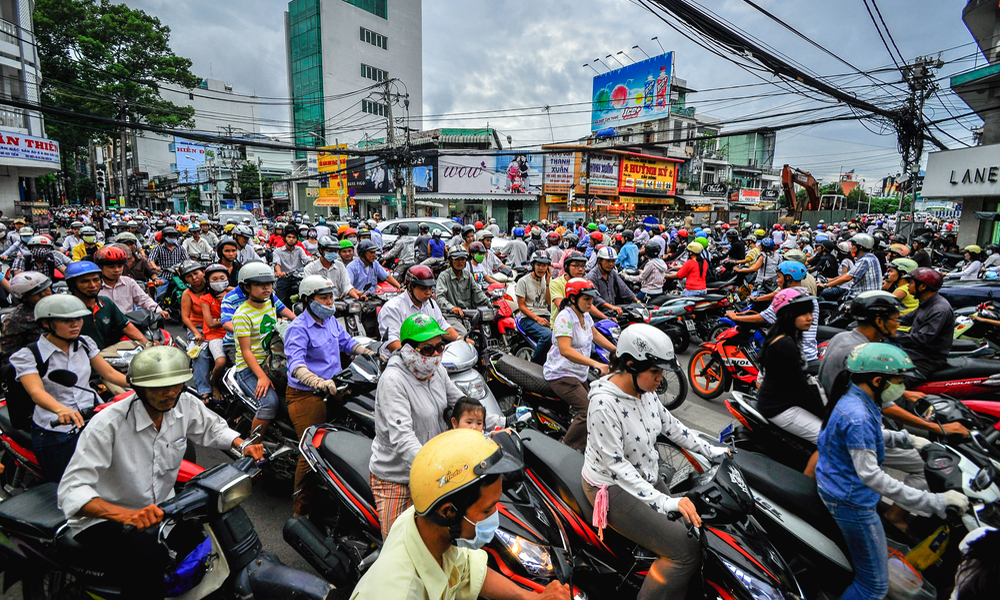
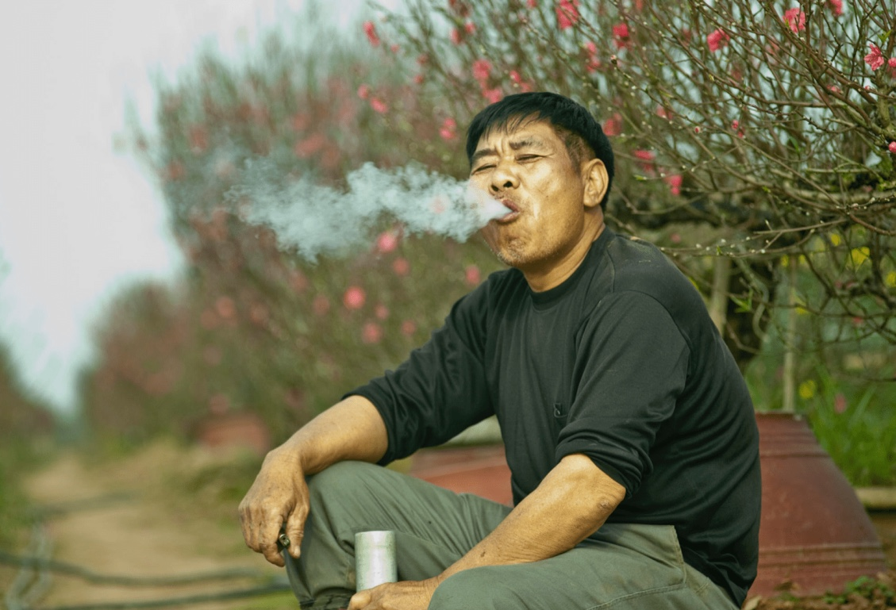

Motobike Culture

Motorbike culture in Vietnam is an iconic and integral part of daily life, reflecting the nation's vibrant energy and adaptability.
With millions of motorbikes weaving through bustling streets, they serve as the primary mode of transportation for people across all walks of life.
Motorbikes are not just vehicles but also a way of life, often used to transport families, goods, and even livestock.
The chaotic yet surprisingly fluid traffic, filled with honking and strategic maneuvers, showcases the resourcefulness of Vietnamese riders.
This culture also fosters social interaction, as riders gather at cafés, roadside stalls, and markets, creating a dynamic street life that defines urban Vietnam.
Thuoc Lao Culture

The thuốc lào culture in Vietnam represents a deep-rooted tradition, especially in rural areas and among older generations.
Thuốc lào, a strong pipe tobacco, is often smoked using a bamboo water pipe known as a điếu cày.
The act of smoking thuốc lào is not merely about consumption but serves as a social ritual, often enjoyed during communal gatherings, tea sessions, or after meals.
It is seen as a symbol of hospitality, with hosts offering it to guests as a gesture of camaraderie. Despite its declining popularity among younger generations, thuốc lào remains a cultural emblem, reflecting Vietnam's rustic lifestyle and traditions.